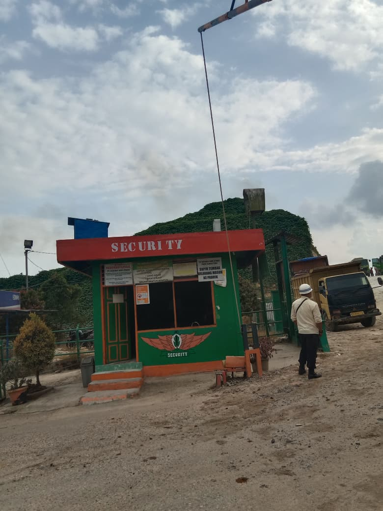
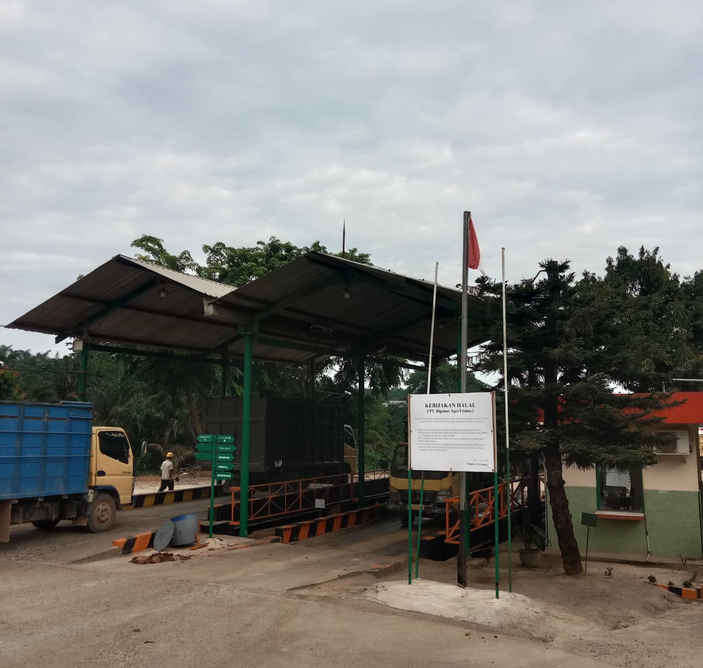
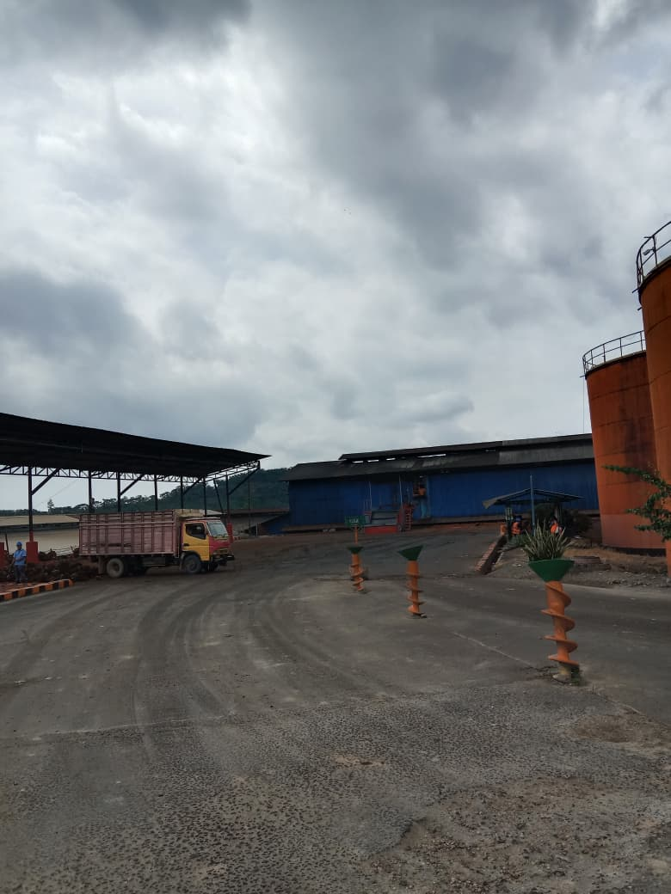
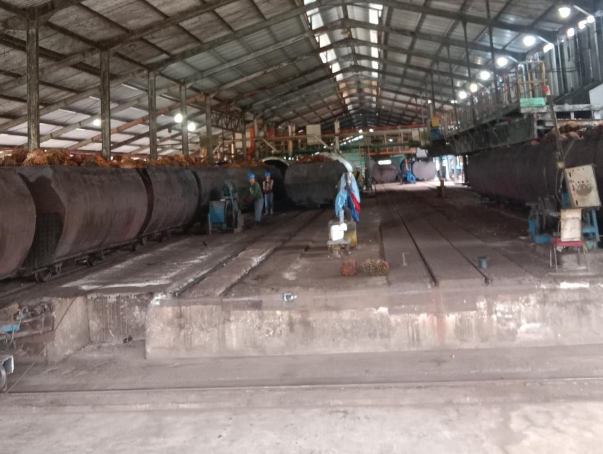
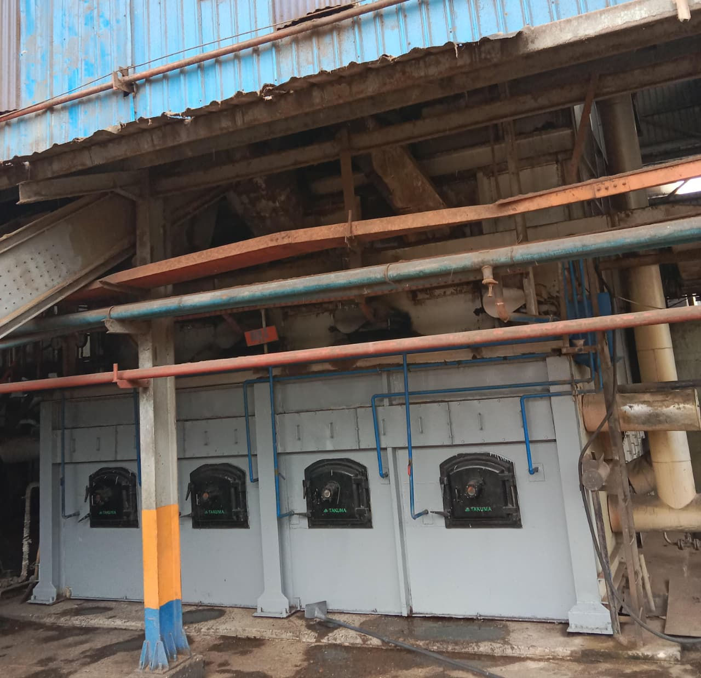
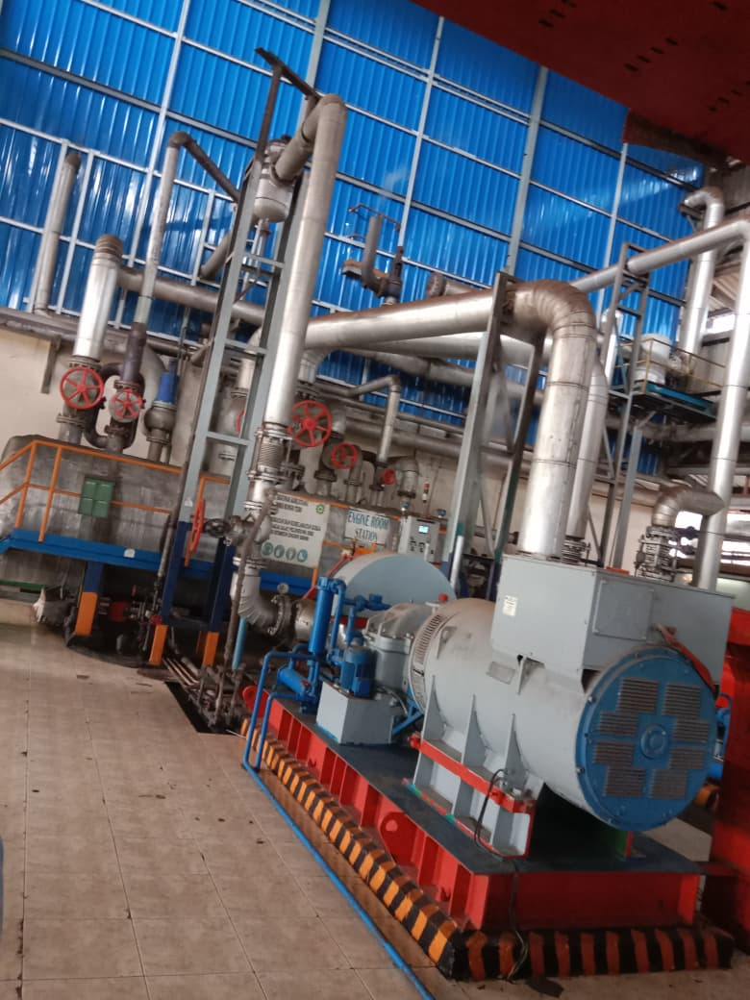
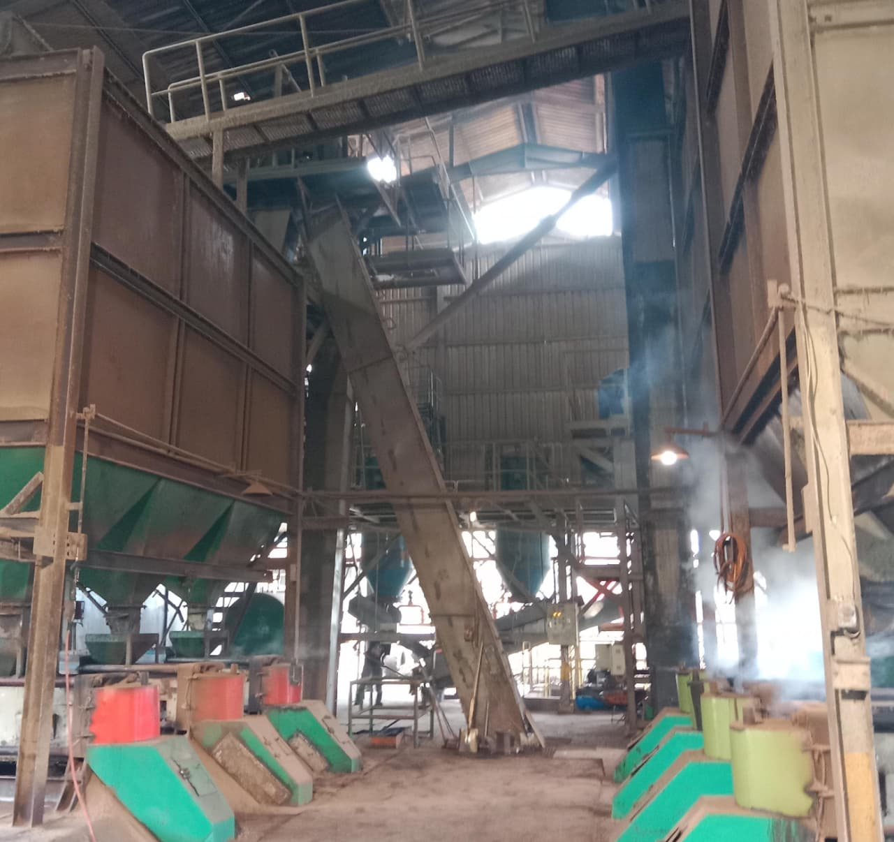

PT Rigunas Agri Utama merupakan perusahaan yang bergerak di bidang industri pengolahan kelapa sawit yang berkomitmen untuk menghasilkan produk berkualitas tinggi melalui proses produksi yang efisien, modern, dan berkelanjutan. Perusahaan ini berfokus pada pengolahan Tandan Buah Segar (TBS) menjadi minyak sawit mentah (Crude Palm Oil / CPO) serta berbagai produk turunan lainnya yang memiliki nilai ekonomis tinggi dan sesuai dengan standar industri yang berlaku.
Dalam menjalankan kegiatan operasionalnya, PT Rigunas Agri Utama didukung oleh fasilitas pabrik yang lengkap dan memadai, penggunaan teknologi pengolahan yang modern, serta sumber daya manusia yang kompeten dan berpengalaman di bidangnya. Selain itu, perusahaan juga menerapkan standar operasional prosedur yang ketat dengan mengutamakan aspek keselamatan dan kesehatan kerja (K3), efisiensi proses produksi, serta pengelolaan lingkungan yang berkelanjutan.
PT Rigunas Agri Utama juga berkomitmen untuk menjalankan praktik industri yang ramah lingkungan melalui pengelolaan limbah yang terintegrasi dan berstandar lingkungan. Upaya tersebut dilakukan melalui penerapan Instalasi Pengolahan Air Limbah (IPAL) yang berfungsi untuk memastikan limbah cair yang dihasilkan telah memenuhi baku mutu lingkungan sebelum dilepas ke alam. Selain itu, perusahaan juga menerapkan sistem pemanfaatan limbah ke lahan (Land Application) sebagai bentuk pengelolaan limbah yang produktif dan berkelanjutan.
Dengan komitmen yang kuat terhadap kualitas produk, kepatuhan terhadap regulasi pemerintah, serta tanggung jawab sosial terhadap masyarakat sekitar, PT Rigunas Agri Utama terus berupaya meningkatkan kinerja perusahaan agar mampu bersaing di tingkat nasional maupun internasional. Perusahaan bertekad untuk menjadi perusahaan pengolahan kelapa sawit yang profesional, terpercaya, serta memberikan kontribusi positif bagi pembangunan industri dan lingkungan secara berkelanjutan.
Crude Palm Oil (CPO) adalah minyak kelapa sawit mentah yang dihasilkan dari proses pengepresan daging buah sawit. CPO merupakan produk utama pabrik yang digunakan sebagai bahan baku industri minyak goreng, margarin, kosmetik, dan biodiesel.
Kernel atau inti sawit adalah biji sawit yang dipisahkan setelah proses pengolahan buah. Kernel menjadi bahan baku utama untuk menghasilkan minyak inti sawit pada tahap pengolahan selanjutnya.
Crude Palm Kernel Oil (CPKO) adalah minyak mentah yang dihasilkan dari pengolahan kernel sawit. CPKO banyak digunakan dalam industri kosmetik, sabun, dan farmasi karena kandungan asam lemaknya.
Palm Kernel Expeller (PKE) atau bungkil sawit merupakan sisa hasil pengolahan kernel setelah minyaknya diambil. PKE umumnya dimanfaatkan sebagai bahan pakan ternak karena kandungan serat dan proteinnya.

Keamanan di lingkungan PT. RIGUNAS AGRI UTAMA dijaga melalui sistem pengawasan yang terstruktur untuk memastikan seluruh aktivitas operasional berjalan dengan aman dan tertib.
Petugas keamanan bertugas melakukan pengawasan akses keluar masuk area pabrik, menjaga aset perusahaan, serta memastikan keselamatan karyawan dan tamu sesuai dengan prosedur keamanan yang telah ditetapkan.

Timbangan digunakan untuk mengukur berat kendaraan yang masuk dan keluar dari area pabrik. Setiap kendaraan yang membawa muatan wajib melalui proses penimbangan awal sebelum kegiatan bongkar atau muat dilakukan.

Sortasi merupakan tahap awal dalam proses pengolahan Tandan Buah Segar (TBS) yang bertujuan untuk memisahkan TBS berdasarkan kualitas dan kondisi fisiknya.
Pada tahap ini, TBS yang tidak memenuhi standar akan dipisahkan agar hanya bahan baku berkualitas yang diproses lebih lanjut, sehingga mutu produksi dapat tetap terjaga.

Loading ramp berfungsi sebagai tempat penampungan sementara Tandan Buah Segar (TBS) yang diterima dari luar area pabrik sebelum dilakukan proses pengolahan lebih lanjut.
Pada area ini, TBS dari kendaraan pengangkut diatur dan dikendalikan agar aliran bahan baku tetap lancar serta kualitas TBS tetap terjaga sebelum masuk ke tahap produksi.

Boiler merupakan unit yang berfungsi untuk menghasilkan uap panas yang digunakan dalam berbagai proses pengolahan di pabrik kelapa sawit, seperti perebusan dan pengeringan.
Bahan bakar boiler umumnya berasal dari limbah padat pabrik, seperti serat dan cangkang sawit. Pengoperasian boiler dilakukan secara terkontrol untuk memastikan pasokan uap tetap stabil serta mendukung kelancaran proses produksi.

Engine room merupakan area yang berfungsi sebagai tempat mesin-mesin pembangkit tenaga listrik yang digunakan untuk menunjang operasional pabrik kelapa sawit.
Pada ruang ini, mesin diesel atau generator dioperasikan dan dipantau secara berkala untuk memastikan pasokan listrik tetap stabil serta mendukung kelancaran seluruh proses produksi.

KCP (Kernel Crushing Plant) merupakan unit yang berfungsi untuk mengolah inti sawit (kernel) menjadi minyak inti sawit melalui proses pengepresan dan pemurnian.
Proses di KCP dilakukan secara terkontrol untuk menghasilkan minyak kernel dengan kualitas yang baik, sedangkan hasil sampingan berupa bungkil dimanfaatkan untuk kebutuhan lain, seperti bahan pakan ternak..